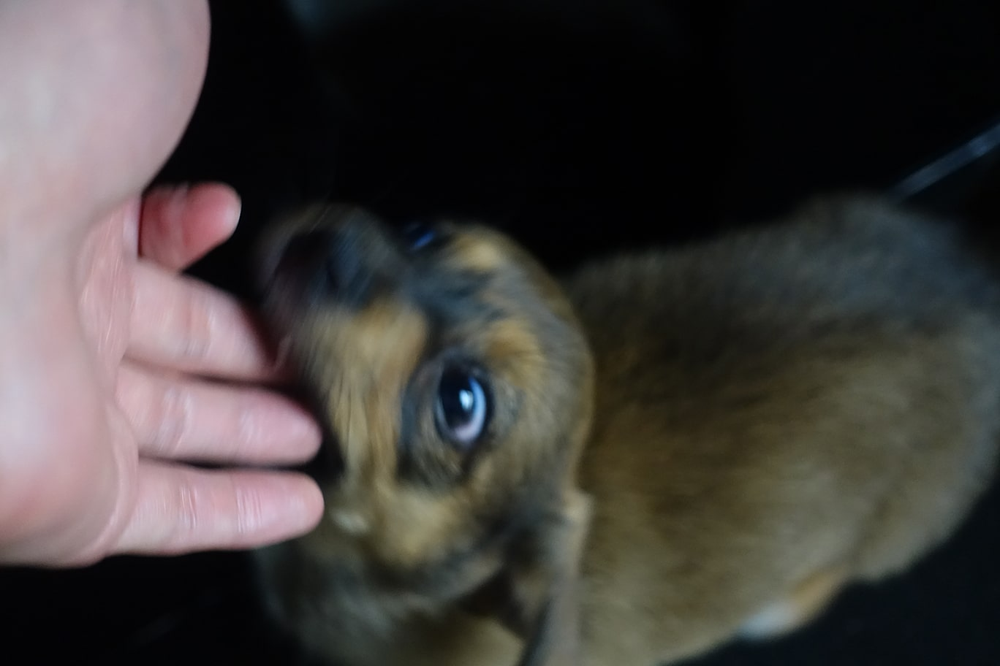
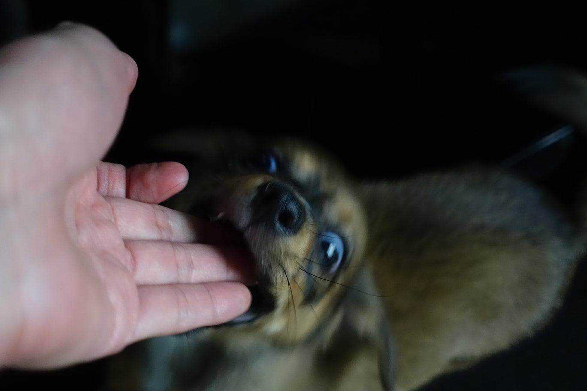
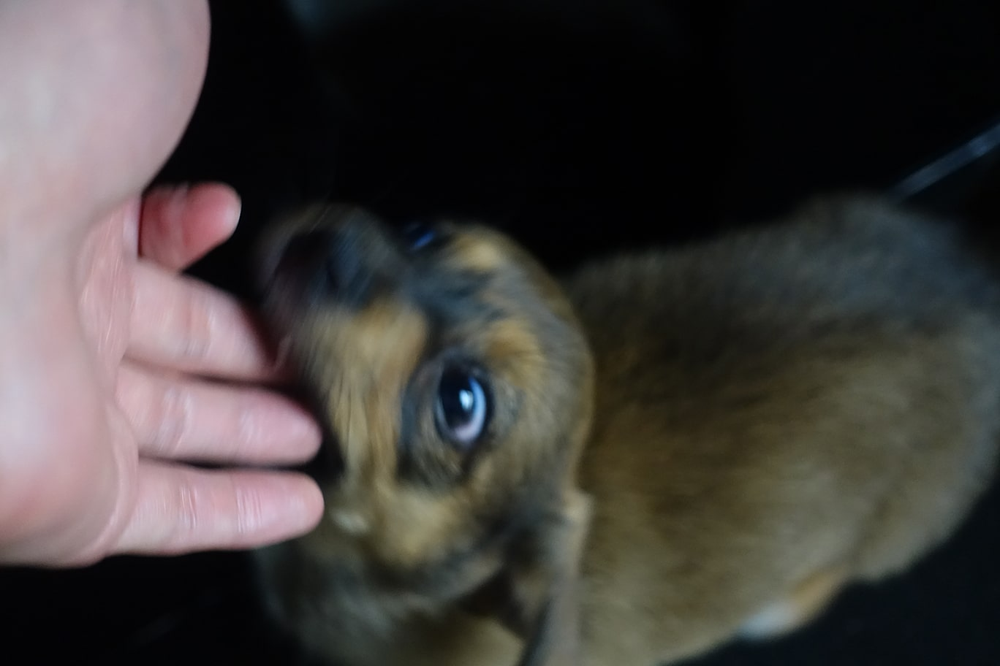
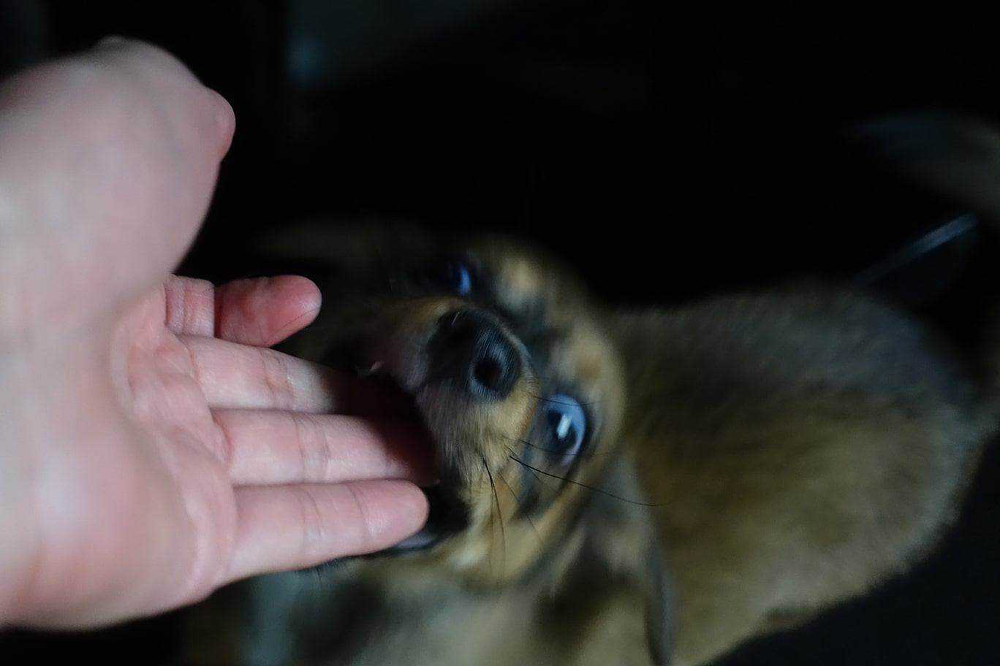

민지 재연
안녕하세요. 민지 님.
어색해 어색해
같은 상수동 주민이셔서 이래저래 많이 뵀죠. 사실 친한 사이에 이렇게 격식차리니 조금 어색하긴 한데 아무튼 먼저 본인에 대한 짧은 소개를 부탁드려도 될까요? 본인에 대한 어떤 정보든 좋아요.
(웃음) 소개를 해본지 엄청 오래되었네요. 음 오늘 인터뷰를 기대하면서 온 민지라고 합니다.
소개가 엄청 간결하네요.
다른 정보는 차차... 신비주의로 가보려고요.
네 좋습니다. 먼저 근황부터 여쭙고 싶네요. 요새는 어떻게 지내시나요?
요새 아침에 일찍 일어나서 맨날 회사를 가서 지각을 하고 일을 하고 점심 먹고 일하고 퇴근하고 사람 만나고 그렇게 지내는 것 같아요.
아침에 출근하는 것도 많이 힘드시겠어요.
힘들어요. 이제 회사 간 지 이제 한 달 반 정도 됐는데 원래 생체 리듬이랑 달라서 아직 적응이 안 된 것 같아요.
그러면 아직 생체 패턴을 맞추지 못한 것 말고는 또 어렵거나 힘든 건 없었나요.
그냥 회사 다니는 게 이렇게 다니는 건 또 처음이다 보니까 계속 한 곳에서 정해진 시간에 있는 것 자체가 조금 힘든 것 같아요.
그러면 반대로 과정 속에서 약간 기쁘거나 보란듯 찼던 경험이 있을까요.
그냥 일보다도 그냥 거기 사람들하고 얘기하는 거 좋은 사람들하고 알아가고 있으니까 그게 좋은 것 같아요.
그래도 회사에 좋은 분들이 계셔서 다행이에요.
최근 있었던 가장 행복한 일이나 또는 행복했던 경험에 대해 듣고 싶어요. 혹시 생각나는 게 있으신가요?
매일 약간 뭔가 불행이랑 행복을 같이 느끼고 있어요. 회사 갈 때 되게 막 감정 기복이 심할 때가 많아서 그러다가 또 마치고 집에 오면 행복할 때가 많아요.
그러면 일 마치시고 집에 오시면 보통 어떤 걸 하시나요? 혹은 휴식 취하실 때 어떤걸 하시는지 궁금합니다.
사실 요즘 휴식을 취하지 못하고 있는 것 같아요. 회사 갔다오면 시간이 잠자는 시간까지 얼마 남지 않으니까 그 사이에 더 놀고 싶은 마음에 휴식이 필요함에도, 피곤한 걸 알면서도 그냥 막 더 노는 것 같아요.
그럼 민지 님은 휴식을 취한다면 어떻게 보내고 싶으신가요?
그냥 햇볕 많이 비치는데도 서 있고 싶어요.
햇빛 너무 좋죠. 맞아요. 날씨가 좋으면 또 밖에 나가고 싶더라고요.
그러면 주제를 돌려서 가장 최근에 다녀오신 여행에 대해 듣고 싶어요. 해외여행부터 동네 산책까지 크고 작은 모든 여행도 다 괜찮아요. 기억나는 경험이 있으신가요?
제주도에 한 달 다녀온 게 생각나요. 오랜기간 여행 간 적이 없었는데 한달간 다녀온 것도 좋았고 좋은 사람과 같이 가니까 더 좋았던 것 같아요. 이제는 다시 그렇게 길게 가보지 못할 것 같아서 생각이 많이 남네요.
한 달이면 꽤 길게 다녀오셨네요. 제주도에서 많은 일들이 있으셨을 것 같은데 가장 기억에 남는 일 하나 들어볼 수 있을까요?
숙소를 원래 에어비엔비로 예약했는데 여행 첫날에 제가 바닷가 쪽으로 숙소를 예약한 줄 알았는데 알고 보니 내륙 쪽이었던 거예요. 예상과 달리 뚜벅이로 다니기 어려운 곳에 숙소가 있어서 다소 당황스러웠지만 그래도 약간 합리화를 하면서 조금 걱정도 하면서 갔는데 생각보다 숙소가 너무 좋았어서 만족했어요. 묵는 동안 자주 지나다니던 숙소 주변 길이 제일 기억에 남네요.
나중에 사진 하나 보내주시면 감사할 것 같아요.
여행 얘기가 나온김에, 최근 가장 가보고 싶은 장소가 따로 있을까요?
가보고 싶은 데는 많은데 가장 가보고 싶은 곳은 경주의 대릉원이요. 주변에서 자전거 타고싶기도 하고 또 제주도에서 묵었던 숙소도 다시 가보고 싶고 해외여행도 가보고 싶고 그냥 동네 근처에 있는 공원에도 가고 싶어요. 그리고 바다도...
가보고 싶은 곳이 많으시네요.
아마 더 있을 거예요. 당장 생각나지 않지만.
얼른 휴가 나와서 여행 가실 수 있기를 바랍니다.
다시 주제를 돌려서, 혹시 좋아하시는 음식을 뽑아본다면 어떤걸 고르실건가요?
쌀국수랑 떡볶이 좋아해요.
그러면 혹시 추천해 주시고 싶은 맛집이 있나요?
근데 추천해드리고 싶은 맛집은 쌀국수랑 떡볶이가 아니에요. 제가 먹는 떡볶이랑 쌀국수는 막 맛집을 찾는 느낌이라기보다는 그냥 솔푸드 같은 느낌이라서 딱 정해둔 곳이 막 한 곳이 있는 그런 느낌은 아니에요. 추천하고 싶은 맛집은 옥동식이라고 합정에 돼지 국밥집이 있는데 거기를 추천해 드릴게요.
사실 저도 아는 곳인데 거기 맛있죠. 저도 좋아합니다.
민지님앞으로 계획 중인 프로젝트가 따로 있을까요? 계획중인 프로젝트라거나 아니면 나중에 어떤걸 해보고 싶다거나.
일단 회사 다니면서도 다른 작업을 계속하고 싶긴 해서 몇가지 생각나는데, 리뷰력이라고 잘 알려지지 않은 아티스트의 작품을 리뷰하는 책 프로젝트를 했던 게 있는데 무료 배부만 하고 더 못 했었어서 판매를 한번 해보고 싶고 또 여력이 되면 두번째 리뷰력도 추진을 해보고 싶네요. 그리고 전시도 준비 중입니다.
엄청 기대되네요. 나중에 전시하게 되면 꼭 찾아뵐게요.
리뷰력도 그렇고 예술학과도 부전공 복수 전공 하셨기도 했고 예술 공간 faction도 추진하셨던 것 보면 예술에 되게 관심이 많으신 것 같아요. 예술에 관심을 가지시게 된 계기가 궁금해요.
그냥 단순하게는 어렸을 때부터 막 미술 이런 거 좋아했고 또 미대를 다니다 보니까 자연스럽게 관심이 가기도 하고 전시회 보러 다니는 것도 좋아하고 또 사람들을 만나는 것도 좋아하다 보니까 계속 접하게 되고 또 관련해서 작업도 하고 싶어지는 것 같아요.
질문이 거의 다 끝나가는데요, 제가 민지 님을 알고 만나뵌 기간이 막 그렇게 길진 않지만 그 기간 사이에도 여러모로 많은 변화가 있으셨던 것 같아요. 지금 시점에서 생각해보는 앞으로의 민지 님은 어떤 모습일까요. 어떻게 살고 싶으신지나 소망 등을 말씀해주셔도 좋을 것 같아요.
앞으로 좀 더 자유로웠으면 좋겠다는 생각이 있고 계속 내 걸 할 수 있었으면 좋겠어요.
마지막으로 입장을 바꿔서, 재연에게 묻고 싶은 질문이 있나요?
인터뷰는 여기서 끝인 건가요.
네 끝입니다.
너무 아쉬운데요. 너무 아쉬워요. 더 했으면 좋겠다.
나중에 기회되면 또 합시다. 인터뷰 해주셔서 감사해요.